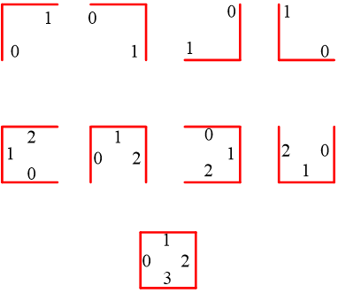

该工具查找指定直线边缘的轮廓特征点。
| 分类 | 参数名称 | 参数描述 |
|---|---|---|
| 属性窗口 | 轮廓段数量 | 轮廓需要的找线卡尺的数量。最大为4。 |
| X方向特征点数量 | X方向的轮廓特征点数量。直线的倾斜角归一化到[0,90]，角度范围在[0,45]时为X方向。 | |
| Y方向特征点数量 | Y方向的轮廓特征点数量。直线的倾斜角归一化到[0,90]，角度范围在[45,90]时为Y方向。 | |
| X方向偏移起始 | 各找线工具的找线结果的交点与粗找线工具搜索区域在X轴方向上的偏差的最小值。见详细描述中的特征点对应。 | |
| X方向偏移终止 | 各找线工具的找线结果的交点与各找线工具搜索区域在X轴方向上的偏差的最小值。见详细描述中的特征点对应。 | |
| Y方向偏移起始 | 各找线工具的找线结果的交点与各找线工具搜索区域在Y轴方向上的偏差的最小值。见详细描述中的特征点对应。 | |
| Y方向偏移终止 | 各找线工具的找线结果的交点与各找线工具搜索区域在Y轴方向上的偏差的最小值。见详细描述中的特征点对应。 | |
| 精细找线卡尺最少数量 | 粗找线卡尺中子卡尺的数量，最小为5。只可取整数。 | |
| 显示精细找线工具 | 在图像上是否显示精细卡尺。 | |
| 图像窗口 | 输入图像 | 用来实时搜索的图像。 |
| 数据链 | 输入图像 | 用来实时搜索的图像。 |
| 二维线性变换 | 定位轮廓的找线工具通过接收二维线性变换可在实时的图像上执行找线。 | |
| 高级界面 | 轮廓段数量 | 锁定轮廓需要的找线卡尺的数量。最大为4。 |
| 设置线段 | 点击后，图像会根据灰度的变化产生所有的轮廓线，用户可在所有的轮廓线上选出想要使用的轮廓线 | |
| 边缘极性 | 缘极性是指图像边缘灰度级的过渡形式，分为3种，任意极性、亮到暗和暗到亮。 | |
| 对比度阈值 | 卡尺工具默认只采用对比度评价分数，即按照边缘信号的强度来评分，输出边缘最强的点。对比度阈值的取值范围是0~255。 | |
| 边缘选择 | 在查找区域内，卡尺根据不同的边缘选择，确定图像边缘的精确位置。卡尺工具的边缘属性有3种，最佳边缘、第一条边缘、最后一条边缘。 | |
| 局外点比例 | 局外点就是偏离曲线较远的点。局外点比例即不参与直线拟合的点的比例，取值范围是0~0.5。 | |
| 手动设置卡尺 | 选中后，支持手动设置卡尺参数，鼠标右键点击卡尺，在弹出的对话框中可以改变卡尺参数；未选中，不支持手动设置卡尺参数。 | |
| 启用掩膜 | 掩膜设置是指在模板训练过程中，屏蔽掉不参与模式训练的区域，减少参与模式训练的几何特征。 | |
| X方向特征点数量 | X方向的特征点数量，直线的倾斜角在[0,45]时为X方向。 | |
| Y方向特征点数量 | Y方向的特征点数量，直线的倾斜角在[45,90]时为Y方向。 | |
| X方向偏移起始 | 各找线工具的找线结果的交点与各找线工具搜索区域在X轴方向上的偏差的最小值。见详细描述中的特征点对应。 | |
| X方向偏移终止 | 各找线工具的找线结果的交点与各找线工具搜索区域在X轴方向上的偏差的最小值。见详细描述中的特征点对应。 | |
| Y方向偏移起始 | 各找线工具的找线结果的交点与各找线工具搜索区域在Y轴方向上的偏差的最小值。见详细描述中的特征点对应。 | |
| Y方向偏移终止 | 各找线工具的找线结果的交点与各找线工具搜索区域在Y轴方向上的偏差的最小值。见详细描述中的特征点对应。 | |
| 精细找线卡尺最少数量 | 单个找线卡尺由多少子卡尺组成，最小为5。只可取整数。 | |
| 显示精细找线工具 | 在图像上是否显示精细卡尺。 | |
| 输入图像 | 获取训练图像时从参数链的输入图像获取 | |
| 加载图像 | 获取训练图像时从外部文件路径加载图像 | |
| 获取训练图像 | 获取训练所需要的图像 |
| 分类 | 参数名称 | 参数描述 |
|---|---|---|
| 监视窗口 | 输入图像 | 输入图像的宽度、高度、像素大小 |
| 轮廓特征点结果 | 查找的所有轮廓点的信息。 | |
| 轮廓数量 | 结果中轮廓的数量。 | |
| X方向的轮廓特征点数量 | X方向的特征点数量。 | |
| X方向的轮廓特征点数量 | Y方向的特征点数量。 | |
| 轮廓特征点 | 所有的轮廓点的相关信息组成的数组 | |
| X、Y坐标 | 轮廓点在图像上的位置。 | |
| 所属段输入序号 | 在高级属性中选择找线工具时的序号。 | |
| 所属段训练序号 | 训练时的序号。 | |
| 段内序号 | 特征点在该线段内的序号。 | |
| 执行结果 | 工具执行结果。 | |
| 执行时间 | 工具执行时间。 | |
| 图像窗口 | 找线结果 | 显示各个轮廓的找线工具的找线结果。 |
| 特征点 | 显示所有的产品的轮廓特征点。 | |
| 执行结果 | 显示工具执行结果，执行成功显示“OK”，执行失败显示“NG”，同监视窗口的执行结果参数。 | |
| 数据链 | 轮廓特征点 | 轮廓的特征点数组供后续参数链调用。 |
| 轮廓特征点结果 | 输出提取的特征点结果。供其他工具使用，同监视窗口参数。 |
工具定义中轮廓段数量支持2、3、4三种情况，其对于的示意图如图1所示。
对于非柔性变形材质，我们一般直接使用找线工具拟合得到该条边的结果，这里为了解决柔性变形的问题，如图2所示，实际的轮廓可能如虚线所示，如果直线使用一个找线工具对整条曲线做拟合会导致结果与实际轮廓有较大误差，故使用分段拟合取结果中点的方法计算特征点，从而获得更稳定的结果。
根据后续对位流程需求，需要满足对应边上特征点位置的对应，对于图3所示两个特征点的情况，要尽量保证D1 = D2。对于以上三种轮廓段数量类型，解决方法如下：

如图7所示，粗找线工具按照顺时针进行编号，这里希望实现用户随意摆放找线控件，根据找线结果进行逻辑内部判断，自动生成内部的找线工具编号，自动生成其X\Y方向属性。
1、两段轮廓：
Step1: XY方向判断。后续需要根据用户输入的X方向和Y方向参数进行预设点数量和偏移的计算，因而需要区分直线为X或Y方向，这里直接根据直线的角度计算，对直线角度归一化到[0,90]，直线角度小于45则为X，否则为Y方向。
Step2：自动编号。顺时针方向判断，区分出0和1。判断方法，如图8所示，线段0和线段1所在直线的交点为P，线段0和线段1中距离交点P较远点为P1和P2，则可得到向量P1P和向量PP2，二者之间的叉积为负则说明是顺时针方向，为正则颠倒编号（在我们的图像坐标系下叉积为正则说明是顺时针方向，否则为逆时针）。
2、三段轮廓：
Step1: XY方向判断。使用和两段轮廓中一样的方法，对三段直线进行方向判断。
Step2：自动编号。这里首先根据方向进行分组，同为X方向或同为Y方向的编号为0或2，另外一个编号为1，采用类似两段轮廓的方法计算0和1或2和1之间的是否符合顺时针，顺时针方向者编号为0。
3、四段轮廓：
Step1: XY方向判断。使用和两段轮廓中一样的方法，对四段直线进行方向判断。
Step2: Y方向的两段线段中，中点X坐标小者编号为0，另外一个编号为2。
Step3: 计算编号为0的线段与X方向的顺时针特性，顺时针这编号为1，另外一个编号为3。
总结：以上计算共需要直线方向判断和顺时针判断两个算法模块。该模块只在训练阶段计算，得到与原始摆放控件的对应关系。
对应方向匹配：对于对应方向的特征点，需要根据特征点在段内的序号进行匹配，如匹配失败，则剔除该特征点。如图10所示，上下两条边的有效匹配为3个点，上面一条边剔除了3个点。
最小点限制：每段有效特征点个数最小为2，否则输出失败。
如图11所示为工具执行的基本流程：
1.粗略找线模块，这里根据用户设置的轮廓段数量和找线工具参数进行找线，根据轮廓段数量对找线模块进行编号(如图12所示4轮廓段情况，编号按顺时针规则，01、03为垂直方向直线，02、4为水平方向)，该模块输出各轮廓段粗找线结果。
2.对找线结果XY方向判断和自动编号。
3.求取直线交点模块，只对相邻编号之间的直线进行交点求取，该模块输出各交点。
4.精细找线参数设置模块，这里需要用户设置X/Y方向的偏移数据和预设特征点数量，对于找线工具的卡尺参数，默认与对应粗找线模块相同，需要考虑搜索方向相反导致的卡尺极性可能不同，但是对找线模块数量做最小为5的限制，若数量小于5，则减小卡尺宽度。这些卡尺在输入图像界面上不显示（可以在粗找线结果界面显示，默认只显示由起始和终止点组成的矩形框），类似图12，用户可以调节矩形框的长度从而通过GUI交互设置起始和终止位置。
5.精细找线模块，该模块完成第三部分设置找线工具的找线，计算结果线段的中点，每个中点作为一个特征点。需要保证对边之间的特征点对应上，具体请按3.3准则输出。
无。
参见“\Samples\轮廓特征点定位工具.gvp”。